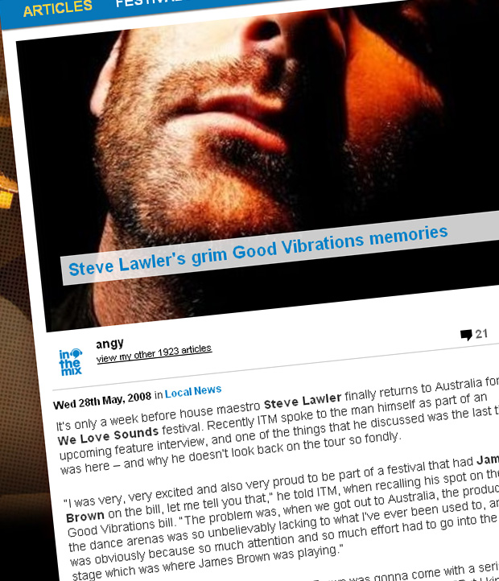

Steve Lawler's grim Good Vibrations memories
{kind=link}

It’s only a week before house maestro Steve Lawler finally returns to Australia for the We Love Sounds festival. Recently ITM spoke to the man himself as part of an upcoming feature interview, and one of the things that he discussed was the last time he was here – and why he doesn’t look back on the tour so fondly.
“I was very, very excited and also very proud to be part of a festival that had James Brown on the bill, let me tell you that,” he told ITM, when recalling his spot on the 2006 Good Vibrations bill. “The problem was, when we got out to Australia, the production of the dance arenas was so unbelievably lacking to what I’ve ever been used to, and this was obviously because so much attention and so much effort had to go into the live stage which was where James Brown was playing.”
“Obviously, you can understand that James Brown was gonna come with a serious rider, and some serious technical specifications,” Lawler went on to explain. “But I kind of got ignored because of it. And that was frustrating for me to travel to the other side of the world, to deliver what I wanted to do [which was] the best [that] I can in front of my fans, and it being restricted because of the equipment available. And I was frustrated by that, because I don’t like to perform unless I can do my best… Most of them were not as good as they could have been, I was a little bit disappointed by the end of it.”
When it comes to the sideshows however, it’s a different story. It seems that Sydney keeps getting the killer gigs from Lawler – while his 2002 performance at Home is that stuff of legend, still talked about in hushed tones by everyone who was in attendance, his set at Tank after the Sydney leg of the Good Vibrations tour was similarly a life-changing gigs for fans. “The Sydney show was a great show for me,” says Lawler, naming it as definitely one of the best sets he’s played in recent years.
Steve Lawler will be here for the We Love Sounds festival, stay tuned for the full interview on ITM next week!